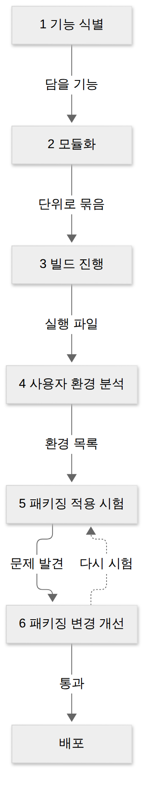
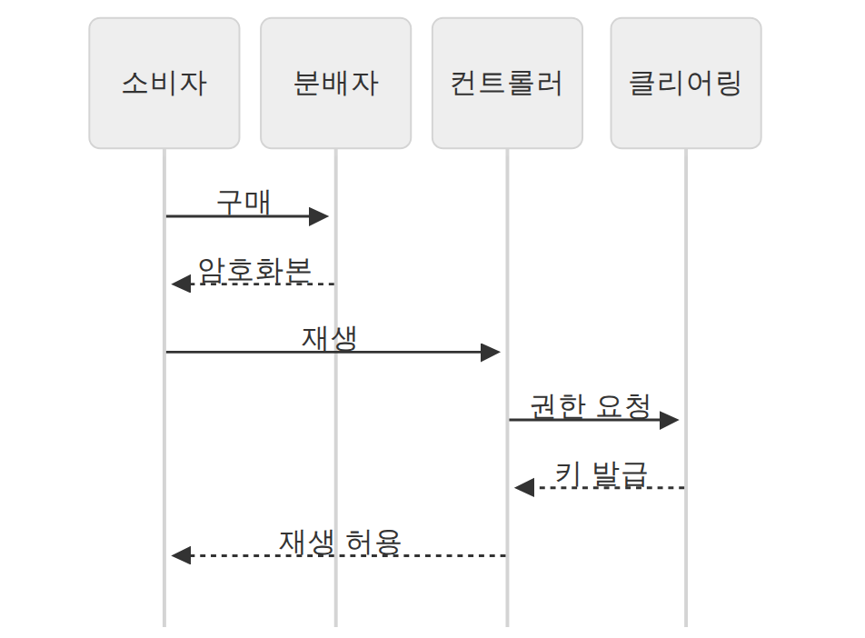
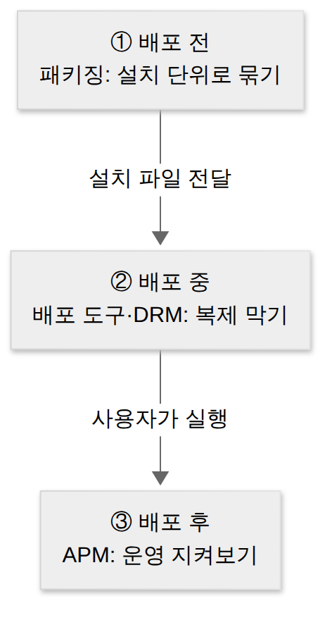
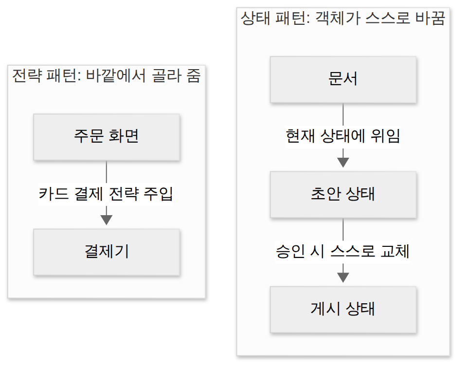

D022 · 패키징과 배포 도구·DRM·애플리케이션 모니터링 도구
A7 어제 D021에서 코드를 단위로 만들고, 형상관리로 기준선을 확정했어요. 오늘부터 1과목 마지막 장 A7 「제품소프트웨어 패키징」이에요. 다 만든 소프트웨어를 사용자에게 넘겨주는 단계라서, 묶고(패키징) · 지키고(배포 도구·DRM) · 지켜보는(APM) 세 가지를 봐요.
- 패키징의 목적과 사용자 중심 원칙, 작업 순서 6단계를 설명할 수 있다
- 배포(패키징) 도구의 구성 기술 8개를 하는 일로 구별할 수 있다
- DRM 구성 요소(제공자·분배자·패키저·보안 컨테이너·DRM 컨트롤러·클리어링 하우스)의 역할을 짝지을 수 있다
- 애플리케이션 모니터링(APM) 도구의 4기능(변경·성능·정적·동적)을 구별할 수 있다
1. 큰 그림 — 만든 것을 남의 손에 넘기기
오늘은 가상의 팀이 만든 동영상 강의 앱 ‘스터디캠’을 처음부터 끝까지 따라가요. PC에 설치하는 프로그램이고, 안에서 유료 강의 영상을 틀어 줘요. 앱은 다 만들었고 형상관리로 v1.0 기준선도 찍었어요.
형상관리까지 마친 코드는 아직 ‘우리 집 냉장고 속 반찬’이에요. 패키징은 그걸 밀폐 용기에 담고 라벨을 붙여 남의 집 식탁까지 보내는 일이에요. 아래 개념 지도에서 오늘 용어가 어느 가지에 매달리는지 먼저 보세요.
시간 순서로 다시 놓으면 아래와 같아요. 기준선 코드를 설치 파일로 묶고(장면 1), 강의 영상을 잠가서 팔고(장면 2·3), 사용자 PC에 깔린 뒤에는 운영 상태를 지켜봐요(장면 4).
→ 이 장면의 결과물: 오늘의 지도. 그래서 첫 장면은 앱을 설치 파일로 묶는 일이에요.
2. 장면 1 — 스터디캠을 설치 파일로 묶기 (제품 소프트웨어 패키징)
개발자 PC에서 빌드가 성공했다고 사용자가 쓸 수 있는 건 아니에요. 사용자 PC에는 라이브러리·런타임이 없을 수도, 관리자 권한이 없을 수도 있어요. 그래서 “어떤 PC에서도 설치하고 실행할 수 있는 꾸러미”로 만드는 별도 단계가 필요해요.
제품 소프트웨어 패키징은 개발이 완료된 제품 소프트웨어를 고객에게 전달하기 위해 배포·설치가 가능한 형태로 묶고, 설치·사용에 필요한 매뉴얼을 함께 만드는 활동이에요. 스터디캠에서는 실행 파일, 영상 재생 라이브러리, 설정 파일을 설치 프로그램 하나로 묶는 일이에요.
패키징의 첫째 원칙은 사용자 중심이에요. 개발자가 다루기 편한 구조가 아니라 사용자가 설치·실행하기 쉬운 구조로 묶어요. ‘제 PC에서는 잘 되는데요’는 개발자의 오래된 주문이지만, 패키징 단계에서는 효력이 없어요. 기준은 사용자 PC예요.
둘째는 모듈 단위로 묶는 거예요. 기능을 모듈로 나눠 두면 영상 플레이어만 고쳐도 그 모듈만 다시 배포할 수 있어요. 셋째는 다양한 사용자 환경을 고려하는 거예요. OS 버전, CPU·메모리 같은 하드웨어 사양, 사내 방화벽 같은 네트워크 조건을 미리 정의하고 그 위에서 시험해요.
작업은 여섯 단계로 진행돼요. 무엇을 담을지 정하고, 모듈로 나누고, 빌드한 다음, 사용자 환경을 분석해서 그 환경에서 시험하고, 문제가 나오면 고쳐서 다시 시험해요. 마지막 두 단계가 되돌이로 도는 게 포인트예요.

스터디캠에 대입하면 이렇게 돼요. 단계 이름은 시험에 순서 문제로 나오니 이 표의 왼쪽 칸 순서를 그대로 기억해 두세요.
| 단계 | 스터디캠에서 하는 일 |
|---|---|
| 1 기능 식별 | 이번 v1.0에 담을 기능(강의 목록, 재생, 이어 보기)과 입출력 데이터를 정한다 |
| 2 모듈화 | 목록·재생·결제 모듈로 나눠 따로 묶을 수 있게 한다 |
| 3 빌드 진행 | 기준선 v1.0 소스를 꺼내 실행 파일을 만든다(D024 빌드 자동화) |
| 4 사용자 환경 분석 | 지원할 OS 버전, 최소 메모리, 네트워크 조건을 목록으로 정한다 |
| 5 패키징 적용 시험 | 그 환경들에서 실제로 설치·실행해 본다 |
| 6 패키징 변경 개선 | 구형 OS에서 재생이 안 되는 문제를 고치고 5단계로 돌아간다 |
패키징이 끝나면 설치 파일과 함께 문서가 나가요. 설치 매뉴얼·사용자 매뉴얼, 그리고 이번 버전에서 무엇이 바뀌었는지 고객에게 알리는 릴리즈 노트예요. 문서 쪽 상세는 D024에서 다뤄요.
→ 이 장면의 결과물: 스터디캠 설치 파일 v1.0. 그런데 앱 안의 유료 강의 영상은 복사하면 그만이에요. 그래서 다음 장면은 영상을 잠그는 기술이에요.
3. 장면 2 — 강의 영상 잠그기 (배포 도구의 구성 기술 8개)
디지털 콘텐츠는 복사 비용이 0원이라, 지키지 않으면 첫 구매자가 곧 마지막 구매자가 돼요. 그래서 설치 파일과 콘텐츠를 묶을 때부터 “허락된 사람만, 허락된 만큼” 쓰게 만드는 기술을 함께 넣어요.
애플리케이션 배포 도구(패키징 도구)는 배포를 목적으로 패키징할 때 디지털 콘텐츠의 지적 재산권을 보호하고 관리하며, 안전한 유통과 배포를 보장하는 도구예요. 구성 기술 8개를 네 개의 서랍에 나눠 넣으면 외우기 쉬워요.
잠그기 서랍에는 세 가지가 있어요. 암호화는 콘텐츠와 라이선스를 암호화하고 전자서명을 붙이는 기술이에요. 키 관리는 암호화에 쓴 키를 저장하고 배포하는 기술이고, 암호화 파일 생성은 콘텐츠를 암호화된 파일 형태로 만들어 내는 기술이에요.
이름 붙이기 서랍에는 두 가지예요. 식별 기술은 콘텐츠마다 고유 번호를 붙여 구별하는 기술이고, 저작권 표현은 그 콘텐츠의 라이선스 내용(재생 횟수, 기간 등)을 표현하는 기술이에요.
규칙 정하기 서랍의 정책 관리는 라이선스 발급과 사용에 대한 정책을 표현·관리하고, 인증은 라이선스 발급·사용의 기준이 되는 사용자를 확인해요. 마지막 서랍의 크랙 방지는 크랙(불법 해제)으로 콘텐츠를 쓰는 걸 막는 기술이에요.
한 장 요약 — 8기술이 하는 일과, 그 아래에서 실제로 쓰이는 세부 기술 예를 짝지으면 이래요. 세부 기술은 “어느 구성 기술 소속인가”를 묻는 형태로 나오니 오른쪽 칸을 왼쪽 칸과 짝으로 봐 두세요.
| 구성 기술 | 하는 일 | 세부 기술 예 |
|---|---|---|
| 암호화 | 콘텐츠·라이선스를 암호화하고 전자서명 | 대칭·비대칭 암호화, 전자서명 |
| 키 관리 | 암호화 키를 저장·배포 | PKI(공개키 기반 구조) |
| 암호화 파일 생성 | 콘텐츠를 암호화된 파일로 생성 | Pre-packaging, On-the-fly packaging |
| 식별 기술 | 콘텐츠에 고유 식별 체계 부여 | DOI, URI |
| 저작권 표현 | 라이선스 내용(허락 범위) 표현 | XrML, MPEG-21 |
| 정책 관리 | 라이선스 발급·사용 정책 표현·관리 | XML, CMS |
| 크랙 방지 | 크랙에 의한 불법 사용 방지 | 코드 난독화, Secure DB |
| 인증 | 라이선스 발급·사용 기준인 사용자 인증 | SSO, ID/PW, 디지털 인증 |
가장 헷갈리는 짝은 식별 기술과 저작권 표현이에요. 식별 기술은 “이 영상이 무엇인가”, 저작권 표현은 “이 영상으로 무엇을 해도 되나”에 답해요. DOI는 콘텐츠의 주민등록번호, XrML은 콘텐츠의 이용 약관이라 보면 돼요. 주민번호만 보고 무엇을 허락할지 정할 수 없듯, 식별만으로 권한이 정해지지 않아요.
크랙 방지와 코드 난독화도 짝으로 봐 두세요. 크랙 방지는 8개 구성 기술의 이름이고, 코드 난독화는 그걸 구현하는 세부 기술 중 하나예요. 출제자는 둘을 나란히 놓고 “어느 쪽이 구성 기술 목록에 있냐”를 슬쩍 떠보곤 해요.
→ 이 장면의 결과물: 잠긴 강의 영상 파일과 그걸 다룰 기술 8개. 하지만 기술만 있다고 영상이 팔리지는 않아요. 누가 잠그고, 누가 팔고, 누가 열쇠를 주는지 구조가 필요해요. 그게 DRM이에요.
4. 장면 3 — 잠근 영상을 파는 구조 (DRM)
앞 장면의 8기술은 부품이에요. 부품을 실제 유통 구조로 조립하면 DRM이 돼요. 제작자부터 사용자 기기까지 콘텐츠가 이동하는 전 과정을 서버의 인증으로 통제하는 거예요.
DRM(Digital Rights Management, 디지털 저작권 관리)은 저작권자가 배포한 디지털 콘텐츠가 허가된 사용자에게, 허가된 권한 범위 안에서만 이용되도록 통제하는 기술과 구조예요. 넷플릭스 영상을 오프라인 저장해도 다른 기기로 옮기면 안 열리는 게 DRM 덕분이에요.
서버 쪽에는 두 요소가 있어요. 콘텐츠 제공자는 콘텐츠를 만들고 저작권을 가진 쪽이에요. 패키저는 그 콘텐츠를 메타데이터와 함께 암호화해 배포 가능한 단위로 묶어요. 스터디캠에서는 강사가 제공자, 영상 인코딩·암호화 서버가 패키저예요.
중개에도 두 요소가 있어요. 콘텐츠 분배자는 쇼핑몰처럼 암호화된 콘텐츠를 유통·판매하는 쪽이에요. 클리어링 하우스는 키 관리, 라이선스 발급, 사용 권한·사용량 관리를 맡아요. 돈을 받고 열쇠를 내주는 창구라고 보면 돼요.
사용자 쪽에는 콘텐츠 소비자의 기기가 있고, 그 안에서 두 요소가 일해요. DRM 컨트롤러는 배포된 콘텐츠의 이용 권한을 통제하고, 보안 컨테이너는 콘텐츠 원본을 안전하게 유통하기 위해 감싸는 전자적 보안 장치예요.
실제로 영상 한 편을 사서 트는 순서를 따라가 보면 각 요소가 언제 등장하는지 보여요. 분배자에게서 받은 건 잠긴 영상뿐이고, 열쇠는 재생하는 순간 클리어링 하우스에서 따로 받아 와요.

한 장 요약 — 일곱 요소를 역할과 자리로 정리하면 이래요. 시험에는 “라이선스 발급·키 관리 = 클리어링 하우스”처럼 역할 설명을 주고 이름을 고르게 해요.
| 요소 | 역할 | 자리 |
|---|---|---|
| 콘텐츠 제공자 | 콘텐츠를 만들고 저작권을 가진 쪽 | 서버 쪽 |
| 패키저 | 콘텐츠를 메타데이터와 함께 배포 가능한 단위로 묶고 암호화 | 서버 쪽 |
| 콘텐츠 분배자 | 암호화된 콘텐츠를 유통·판매(쇼핑몰 등) | 중개 |
| 클리어링 하우스 | 키 관리, 라이선스 발급, 사용 권한·사용량 관리 | 중개 |
| 콘텐츠 소비자 | 콘텐츠를 구매해 이용하는 사용자 | 사용자 쪽 |
| DRM 컨트롤러 | 배포된 콘텐츠의 이용 권한을 통제 | 사용자 기기 |
| 보안 컨테이너 | 원본을 안전하게 유통하기 위한 전자적 보안 장치 | 콘텐츠를 감쌈 |
보안 컨테이너와 DRM 컨트롤러도 자주 섞여요. 놀이공원으로 치면 클리어링 하우스는 매표소, DRM 컨트롤러는 놀이기구 앞에서 팔찌를 확인하는 직원, 보안 컨테이너는 팔찌 없이는 안 열리는 회전문이에요. 상자는 콘텐츠와 함께 다니고, 문지기는 기기에 머물러요.
→ 이 장면의 결과물: 팔고, 열쇠 주고, 기기에서 확인하는 유통 구조. 이제 스터디캠은 수많은 사용자 PC에서 돌아가기 시작해요. 그다음 걱정은 “거기서 잘 돌고 있나”예요.
5. 장면 4 — 배포 후 지켜보기 (애플리케이션 모니터링 도구)
배포는 끝이 아니라 사용자 환경에서 버그가 처음 세상 구경을 하는 날이에요. 시험 환경에서 못 본 사양, 못 본 사용 패턴이 운영에서 한꺼번에 나타나요. 그래서 배포한 뒤에도 애플리케이션 상태를 계속 지켜보는 도구가 필요해요.
애플리케이션 모니터링 도구(APM)는 사용자 환경에 배포된 애플리케이션을 모니터링해 성능과 서비스 가용성을 감시·관리하고, 장애를 미리 막는 도구예요. 현업에서 보는 응답 시간·TPS 대시보드가 이 도구의 얼굴이에요. 기능은 넷으로 나눠요.
변경 관리는 애플리케이션 사이의 종속 관계를 모니터링하고, 무언가 바뀌었을 때 그 영향이 어디까지 번지는지(변경 영향도)를 분석해요. 스터디캠의 결제 모듈을 고치면 이어 보기 기능까지 영향이 가는지 미리 보는 일이에요.
성능 관리는 실행 중인 애플리케이션의 트래픽, 응답 시간, CPU·메모리 같은 자원 사용을 모니터링해 병목을 찾아요. 신규 강의 오픈 날 접속이 몰릴 때 어느 구간이 느려지는지 보는 게 여기예요.
정적 분석은 프로그램을 실행하지 않고 소스 코드를 검사해 코딩 규칙 위반, 잠재 결함을 찾아요. CI에서 돌리는 lint가 이 쪽이에요. 동적 분석은 프로그램을 실제로 실행하면서 메모리 누수, 런타임 오류 같은 결함을 찾아요. 정적 분석은 차를 세워 두고 보닛을 여는 정비, 동적 분석은 시동 걸고 달려 보는 시운전이에요.
한 장 요약 — 네 기능이 무엇을 보는지와 교재에 자주 나오는 도구 이름이에요. 도구 이름은 참고용이고, 정적·동적 분석 도구 상세는 D027에서 다시 봐요.
| 기능 | 무엇을 보나 | 예시 도구(참고) |
|---|---|---|
| 변경 관리 | 종속 관계, 변경 영향도 | ChangeMiner |
| 성능 관리 | 트래픽·응답 시간·자원 사용 | Jennifer, Scouter |
| 정적 분석 | 실행 없이 소스 코드 결함·규칙 위반 | PMD, Cppcheck, Checkstyle |
| 동적 분석 | 실행하며 메모리 누수·오류 | Valgrind, Avalanche |
D021의 화이트박스·블랙박스와 헷갈리지 마세요. 그쪽은 “코드 구조를 보느냐, 입출력만 보느냐”이고, 정적·동적은 “실행하느냐 마느냐”예요. 축이 달라서, 실행하며 분기 경로를 따라가는 화이트박스 테스트는 동적이면서 화이트박스예요.
→ 이 장면의 결과물: 배포 후에도 꺼지지 않는 감시 화면. 이제 네 장면을 한 번에 꿰어 봐요.
6. 한 장 정리 — 네 장면 꿰기
오늘 장면을 결과물 중심으로 다시 놓으면 아래 표예요. 앞 장면의 결과물이 다음 장면의 재료가 되는 흐름을 확인하세요.
↔ 표가 넓어요. 옆으로 밀어서 보세요
| 장면 | 하는 일 | 시험 개념 | 결과물 |
|---|---|---|---|
| 1 | 앱을 사용자 PC 기준으로 묶음 | 패키징, 사용자 중심, 6단계 | 설치 파일·매뉴얼·릴리즈 노트 |
| 2 | 강의 영상을 잠그고 이름·규칙을 붙임 | 배포 도구 구성 기술 8개 | 암호화된 콘텐츠 |
| 3 | 잠긴 영상을 팔고 열쇠를 줌 | DRM 구성 요소, 클리어링 하우스 | 허가된 범위의 이용 |
| 4 | 배포 후 상태를 지켜봄 | APM 4기능 | 장애 예방·성능 개선 |
시간 축으로만 보면 더 단순해요. 패키징이 만든 설치 파일이 배포 도구·DRM의 보호를 받고 나가고, 사용자가 실행하는 순간부터 APM이 붙어요. 택배로 치면 포장(패키징), 봉인 테이프(배포 도구·DRM), 배송 조회(APM) 순서예요.

7. 시험 포인트·암기 단서
설명을 다 읽은 뒤 정리용으로 쓰세요. 두문자어는 순서와 이름을 붙잡는 손잡이일 뿐이에요. 손잡이만 외우고 문을 안 열어 보면, 출제자가 문 이름을 살짝 바꾸는 순간 그대로 막혀요.
8. 오답 복습 — 워크숍, 상태 vs 전략
세 주 만에 다시 만나는 워크숍과, 지난주에 본 상태 패턴이에요. 복습 문제는 이름표를 바꿔 단 옛 손님이라 얼굴만 기억하면 돼요.
D001-2 다시 보기. 요구분석기법 중 워크숍은 이해관계자들이 진행자와 함께 짧은 기간 한자리에 모여 집중 토의하고 합의를 이끌어 내는 방법이에요. 설문은 많은 사람에게 같은 질문을 던져 의견을 모으기만 하고, 관찰은 현장을 지켜볼 뿐이에요. 요구가 서로 부딪칠 때 그 자리에서 조율하는 건 워크숍뿐이에요.
D014-2 다시 보기. 상태 패턴은 객체의 상태를 별도 클래스로 나누고 요청을 현재 상태 객체에 맡겨요. 상태가 바뀌면 객체가 스스로 상태 객체를 교체해서, 같은 요청에도 행동이 달라져요. 전략 패턴은 바깥(클라이언트)이 알고리즘 객체를 골라 넣어 주는 구조예요. “누가 바꾸느냐”만 보면 갈려요. 안에서 스스로 바꾸면 상태, 밖에서 골라 주면 전략이에요.

확인 문제 (채점 완료 · 3/5)
- DRM 구성 요소 중, 사용자에게 콘텐츠 라이선스를 발급하고 암호화 키 관리와 이용 권한·사용량 관리를 맡는 것은?
정답·해설
③ 클리어링 하우스. 라이선스 발급·키 관리·사용 권한·사용량 관리를 맡아요. 분배자는 유통, 패키저는 메타데이터와 묶기, 보안 컨테이너는 안전하게 담는 상자예요. - 애플리케이션 배포(패키징) 도구의 구성 기술 중, 각 콘텐츠에 DOI·URI 같은 고유 식별 체계를 부여해 콘텐츠를 구별할 수 있게 하는 것은?
정답·해설
① 식별 기술. DOI·URI 같은 고유 식별 체계를 붙여요. 저작권 표현은 라이선스 내용 표현(XrML 등), 크랙 방지는 불법 크랙 차단, 정책 관리는 사용 정책 관리예요. - (누적) UML 다이어그램 중 구조(정적) 다이어그램에 해당하는 것은?
정답·해설 (오답 기록됨)
④ 배치 다이어그램. 구조(정적) 6종은 클객컴배패복(클래스·객체·컴포넌트·배치·패키지·복합 구조)이에요. 고른 ② 상태 다이어그램은 이름에 ‘상태’가 들어가서 정적처럼 보이지만, 상태가 시간에 따라 바뀌는 걸 그리는 행위 다이어그램이에요. 시퀀스·활동도 행위예요. - (오답 재확인) 사내 결재 시스템 개편에서 재무팀은 승인 단계를 늘리길, 영업팀은 줄이길 원한다. 두 팀 대표와 PM이 하루 동안 한자리에 모여 진행자의 진행 아래 토의하고 합의안을 만드는 요구분석기법은?
정답·해설 (D001-2 D+21 통과 · 오답 졸업)
② 워크숍. 상충하는 요구를 한자리에서 토의·합의해요. - (오답 재확인) 자판기 객체가 '동전 없음·동전 있음·품절'을 각각 별도 클래스로 두고 '버튼 누름' 요청을 현재 상태 객체에 맡긴다. 동전이 들어오면 객체 스스로 현재 상태 객체를 바꾸어, 같은 요청에도 동작이 달라진다. 이 디자인 패턴은?
정답·해설 (D014-2 재확인 실패 · 다시 복습)
③ 상태. 단서는 “현재 상태 객체에 위임”, “상태 객체가 스스로 다음 상태로 바뀜”이에요. 고른 ① 전략은 바깥(클라이언트)이 알고리즘을 골라 넣어 줘요. 자판기가 동전을 넣으면 저절로 ‘동전 있음’ 상태가 되죠. 누가 고르지 않았으니 상태 패턴이에요.
고른 뒤 답안 복사 → 디스코드 공부 채널에 붙여넣기 하면 돼요.
답장: 정처기 D022: 1)번호 2)번호 3)번호 4)번호 5)번호
내일 D023은 일요일 주간 종합 복습이에요(A4~A6 + 지난 범위 누적, 20문항). 설치·사용자 매뉴얼, 소프트웨어 품질 표준(ISO/IEC 9126·25010 등), 버전 관리 용어와 빌드 자동화는 D024에서 이어져요.